아이리움 안내렌즈삽입술 주요 성과
-
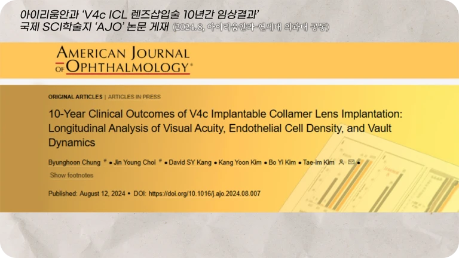
ICL10년 수술결과 SCI 학술지 AJO 논문 등재
-
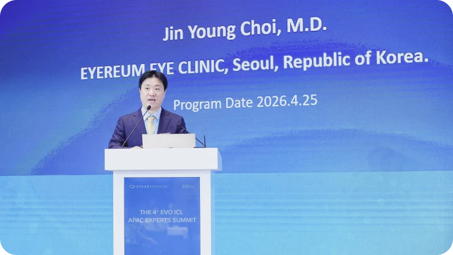
ICL10년 수술결과 SCI 학술지 AJO 논문 등재
-
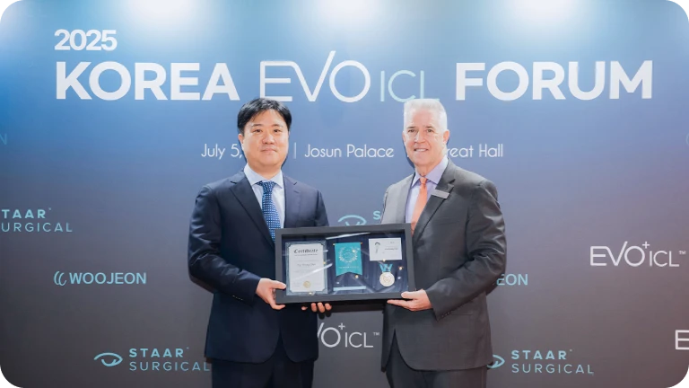
2025 ICL 국제포럼
ICL Expert Instructor 위촉 -
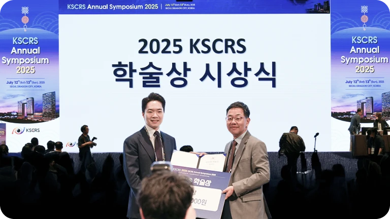
2025 백내장굴절수술학회
논문부문 학술상ICL 장기적 임상결과
ICL 렌즈삽입술 누적
12,500안
* 2026년 3월 본원 누적처방건수기준
-
근난시 ICL
레퍼런스 닥터STAAR의 EVO Toric ICL 레퍼런스 닥터 -
렌즈삽입술
수술 도구 특허안내렌즈 적출용 수술도구 특허 보유 -
Regional
contributionAPAC ICL 학회
Regional Contribution 수상 -
ICL
글로벌협약 안과STAAR와 제휴, EVO ICL 개발·안전 자문
아이리움 렌즈삽입술의
3가지 연구 기준
렌즈삽입술은 수술에서 끝나지 않습니다. 아이리움은 수술 후 10년간 안정성,
렌즈 사이즈와 생체 내 ICL렌즈의 볼팅값 변화, 재수술까지 연구해왔습니다.
-
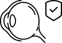
ICL 10년 장기 안정성 연구ICL 수술 후 시력, 각막내피세포, 볼팅값 변화를 10년간 추적 분석하여, 수술 직후 결과뿐 아니라 장기 관리의 중요성을 확인했습니다.

10-Year ICL Outcomes. AJO 2025
-
렌즈 사이즈·볼팅값 연구
ICL 수술 후 렌즈와 수정체 사이의 거리(볼팅값)가 빛 조건과 조절 환경에 따라 달라짐을 밝혀, 정확한 렌즈 사이즈 선택과 수술 후 관리의 기준을 제시했습니다.
Dynamic Vaulting Changes. AJO 2014 / AJO 2015
-
근시퇴행 후 재교정 연구
라식·라섹 등 시력교정 후 ICL렌즈삽입술로 재교정한 결과를 분석. 각막 상태와 추가 레이저 수술이 부담되는 환자군에서 새로운 선택지를 제시했습니다.
ICL After Myopic Regression. BMC Ophthalmology 2021
세계적 ICL 네트워크에서
인정받는 아이리움
글로벌 의료진이 주목하는 독보적인 기술력으로,
전 세계가 신뢰하는 안전한 렌즈삽입술을 선사합니다.
-
EVO ICL 전략적 협력
아이리움은 EVO ICL 제조사 STAAR Surgical과 전략적 협력을 통해 렌즈삽입술의 안전성, 교육, 임상 교류에 참여하고 있습니다.
-
난시 교정 ICL 레퍼런스 닥터
레퍼런스 닥터는 STAAR Surgical 가 위촉한 난시교정 Toric ICL의 수술 경험과 임상 교류, 교육 역할을 인정받은 의료진을 의미합니다.
-
수술 후 관리와 특허
렌즈삽입술 후 라이프 케어(Long-Term ICL Safety Management), 수술 정밀도를 높이기 위한 수술도구 특허는 ICL 10년 장기적 안전성과 안전성 확보의 기반이 되었습니다.
렌즈삽입술 종류
단순한 삽입이 아닌 '정확한 설계'가 우선입니다.
아이리움은 수술 후 장기적 안정성까지 고려한 최적의 렌즈를 선택합니다.
아이리움만의 노하우
Advanced ICL Expertise by EYEREUM
-
10년 데이터를 바탕으로 한 ICL 수술 원칙
아이리움은 ICL 렌즈 삽입술에서 수술 직후 시력뿐 아니라, 장기적인 렌즈 위치와 각막 내피세포 변화를 중요하게 봅니다. 수술 전부터 수술 후 정기 검진까지 이어지는 관리가 아이리움 렌즈삽입술의 핵심입니다.
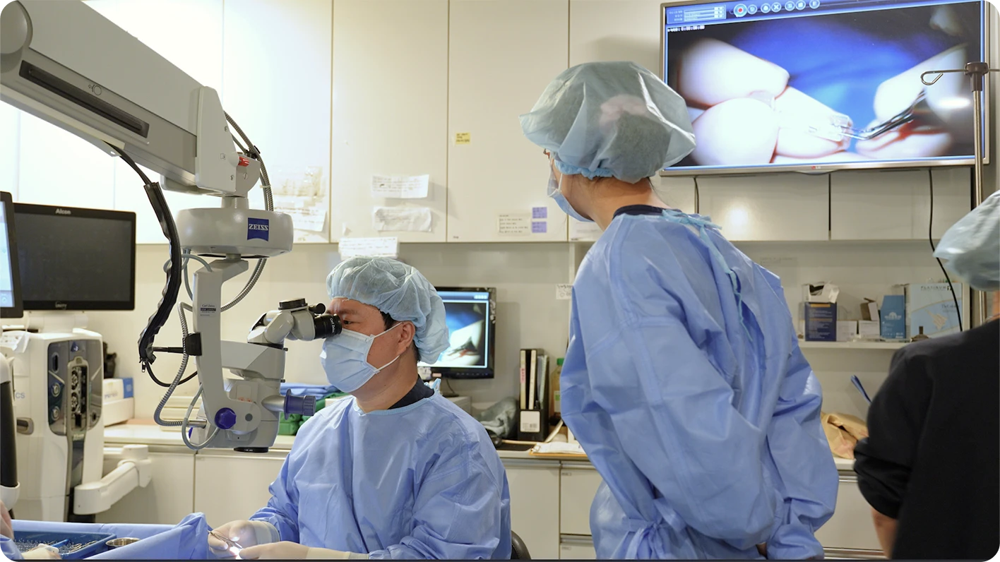
-
반영구적 시력 교정의 핵심, 내 눈에 맞는 렌즈 사이즈 선택과 렌즈 위치까지 과학적으로 설계
수술 전 렌즈 사이즈 선택과 수술 후 볼팅값(렌즈와 수정체 사이의 거리) 안전성 확보를 위해, 카시아2 등 첨단 정밀 검사 장비와 논문에 근거해 수술을 설계합니다.
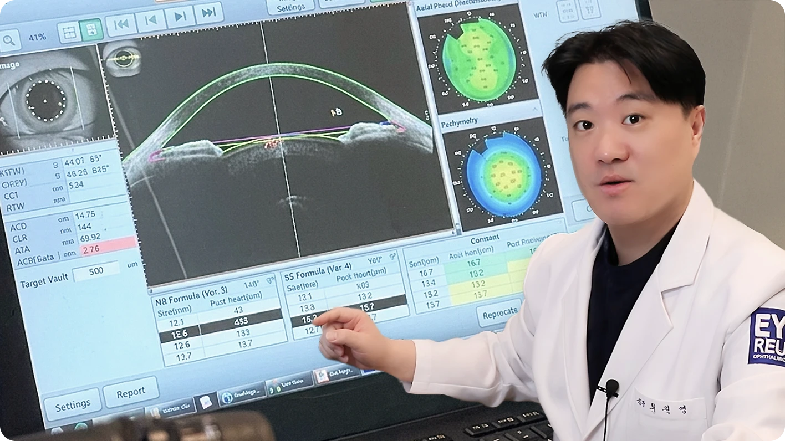
-
각막을 보존하고, 장기적 안정성을 관리하는 렌즈삽입술
ICL은 각막을 깎지 않는 수술이지만, 장기 안정성을 위해서는 수술 후 렌즈 위치, 각막 내피세포, 안압 등을 꾸준히 확인해야 합니다. 아이리움은 장기 추적 연구를 바탕으로 수술 후 관리의 중요성을 강조합니다.
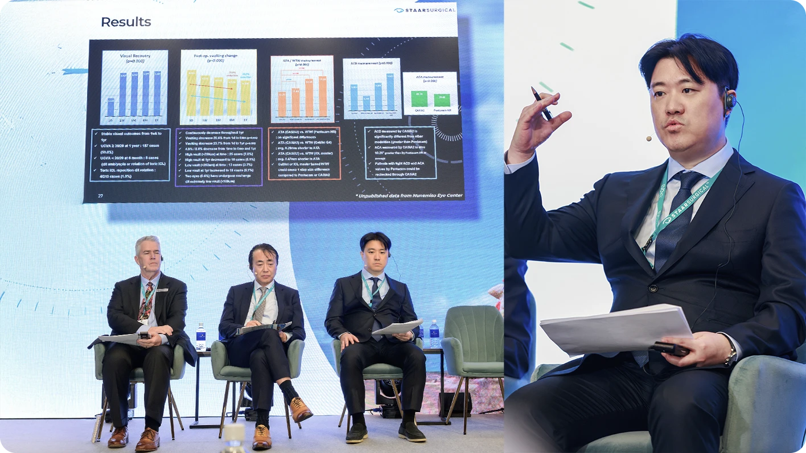
아이리움의 특별 검사
Advanced Screening System by EYEREUM
-
전안부 OCT 검사, ‘카시아2’ 렌즈 사이즈 선택의 필수, 렌즈 위치 정밀 확인
전안부 OCT로 각막과 전방 구조를 3차원으로 분석하여 렌즈 삽입술 적합성을 확인합니다. 렌즈와 수정체 사이의 거리인 볼팅값을 예측하고, 수술 후 렌즈 위치를 확인하는 데에도 활용합니다.
검사장비 '카시야 2' 자세히 보기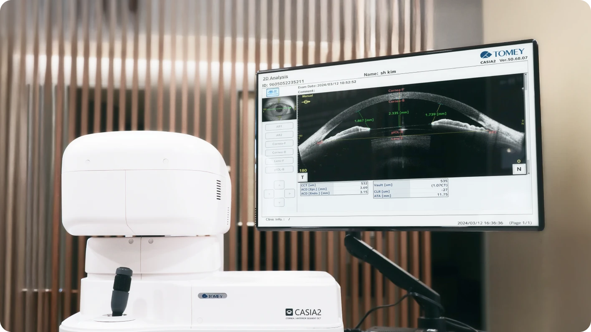
-
녹내장·안압 검사, 수술 전 위험 요인을 확인
렌즈 삽입술 전 안압과 시신경 상태를 확인해 수술 전 위험 요인을 점검합니다. 또한 수술 후 안압 변화 여부를 정기적으로 점검하는 데에도 활용합니다.
검사장비 '시러스 HD-OCT' 자세히 보기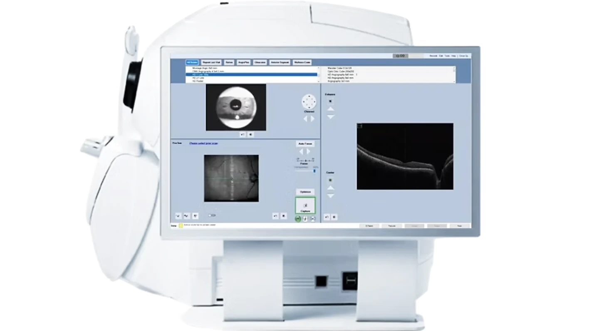
-
내피세포 검사, 장기적인 각막 안전성을 위한 필수 확인
각막 내피세포는 한 번 손상되면 회복이 어렵기 때문에, 렌즈 삽입술 전후로 반드시 확인해야 하는 핵심 요소입니다. 아이리움은 10년 장기 추적 연구에서도 각막 내피세포의 변화를 주요 지표로 분석해 왔습니다.
검사장비 '스펙큘러' 자세히 보기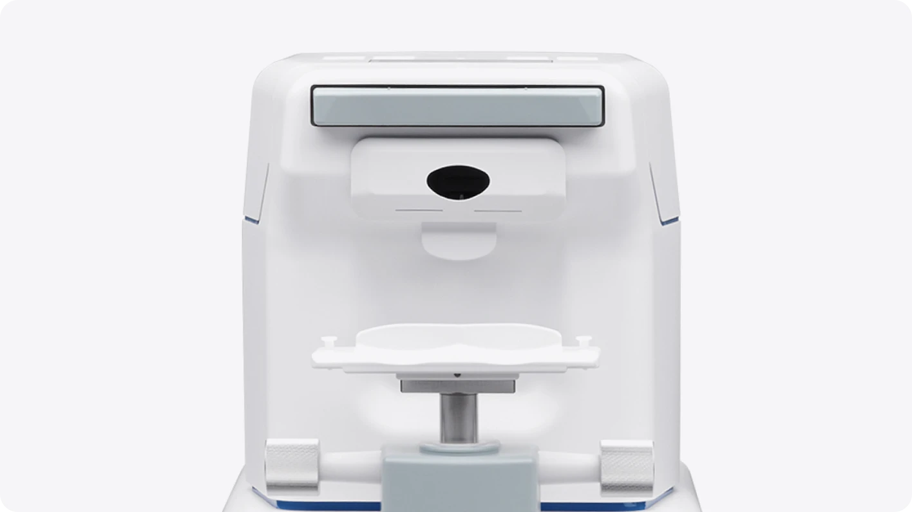
-
조절마비 검사, 정확한 도수와 렌즈 설계를 위한 과정
조절 마비 검사는 눈의 일시적인 조절력을 배제하여 실제 근시와 난시 도수를 정확하게 측정하는 검사입니다. 이를 통해 확인한 정확한 도수는 렌즈 선택과 수술 결과를 예측하는 데 중요한 기준이 됩니다.
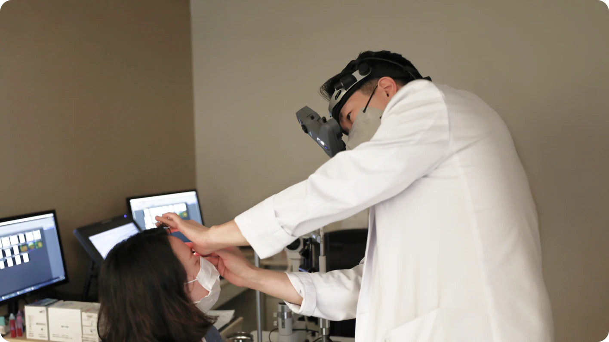
-
오차 없는 완벽한 설계를 위한 2번의 진료
렌즈삽입술의 안전 검사 중 담당 원장님께 조절 마비 검사 확인을 위한 진료와 망막 진료, 총 2번의 진료가 이루어지며 2차 진료를 통해 각자의 눈에 맞는 렌즈를 찾습니다.
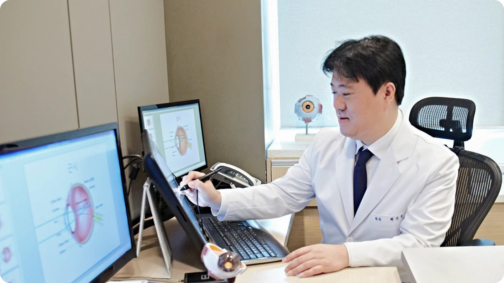
정기검진의 중요성, 수술이 끝나면
시작되는 아이리움의 책임
추적 연구를 통해 수술 후 관리의 중요성을 확인했습니다.
잘 보인다고 관리를 소홀히 해서는 안 됩니다. 수술 전부터 정기검진의 중요성을
철저히 교육하고, 끝까지 건강한 시력을 유지하도록 돕는 시스템. 이것이 아이리움이 렌즈삽입술의 선두를 지키는 이유입니다.
가장 신중해야 할 재수술, 특허받은
기술력으로 완성하는 이중 안전
확인해야 합니다.
재수술은 일반 수술보다 훨씬 더 정교하고 까다로운 접근이 필요합니다. 아이리움은 숙련된 실력을 넘어, 직접 개발한 '렌즈 적출 전용 도구'의 특허 획득으로 수술의
정밀도를 한 차원 더 높였습니다.
부작용 치료와 재수술
렌즈 삽입술은 수술 자체보다 문제 발생 시 제거·교체와 장기 관리가 가능한 병원인지까지 함께 봐야 합니다.
아이리움안과는 타원에서 의뢰된 렌즈삽입술 재수술을 의뢰받아 시행하고 있습니다.
-
제거와 재수술
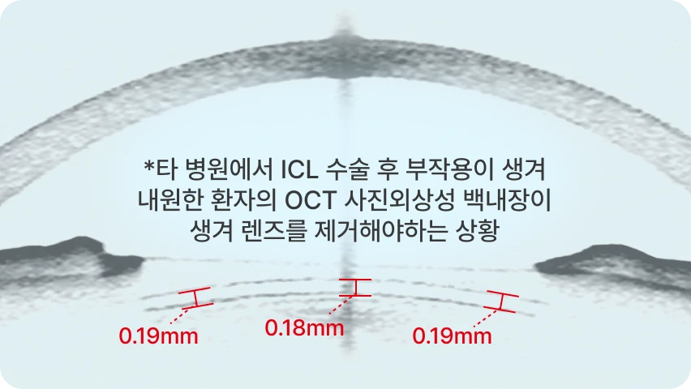
타원에서의 수술 후 관리 부재나 부작용으로 아이리움을 찾는 분들이 많습니다. 진정한 렌즈삽입술 선두는 수술을 잘하는 것을 넘어, 제거와 치료 등 발생 가능한 모든 상황에 완벽히 대처할 수 있어야 합니다.
-
렌즈제거술
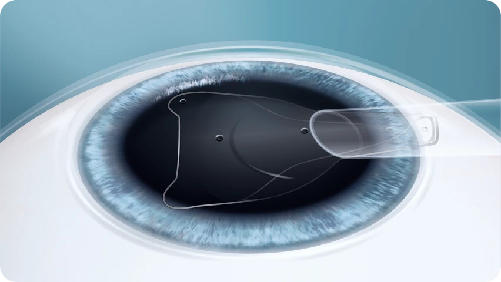
수술 후 불가피한 사유로 안내렌즈를 교체하거나 제거해야 할 상황이 생기더라도, 아이리움안과의 숙련된 기술력으로 안전한 렌즈제거술을 시행하여 눈의 건강을 되찾아 드립니다.
-
각막내피세포 보호
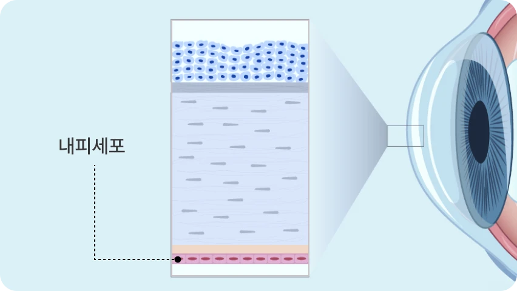
재생되지 않는 각막내피세포를 보호하는 것이 렌즈 제거술의 핵심입니다. 아이리움은 풍부한 임상 경험을 바탕으로 세포 손상을 최소화하여 수술 후까지 안심하실 수 있습니다.
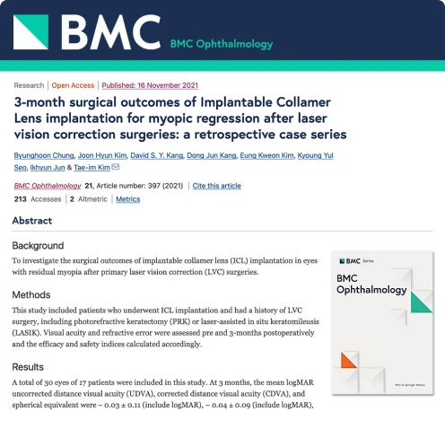
3-month surgical outcomes of Implantable Collamer Lens implantation for myopic regression after laser vision correction surgeries: a retrospective case series.
BMC Ophthalmology. Nov 2021. doi: 10.1186/s12886-021-02163-3
연구 성과로 기준을 만드는
아이리움 렌즈삽입술
-
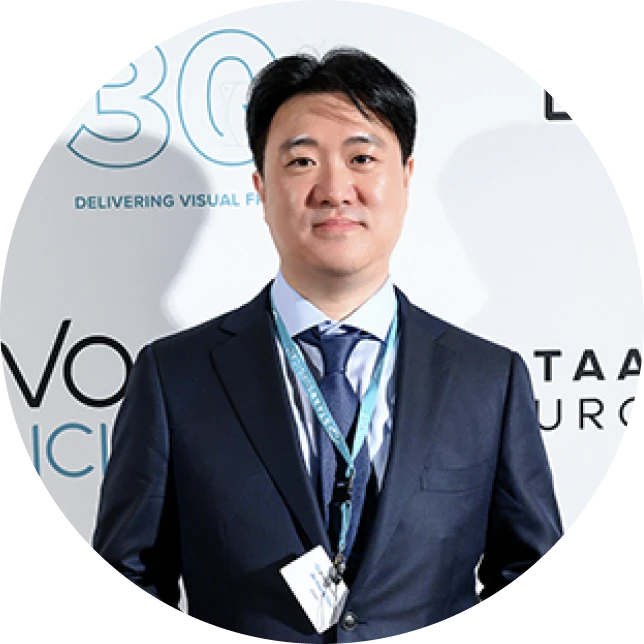
-
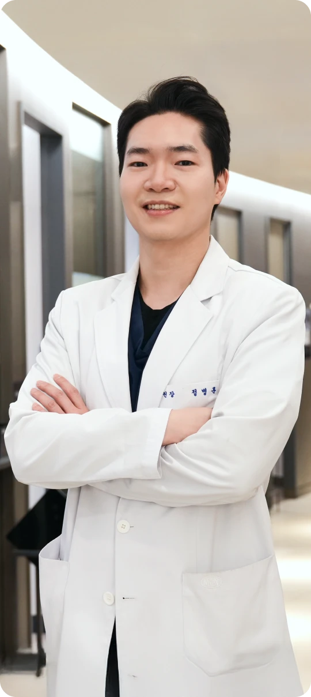
-
2026
아이리움 ICL 렌즈삽입술 누적 12,500안 (2026년 3월 누적처방건수 기준)
-
2025
한국백내장굴절수술학회 학술상 (EVO ICL Regional Contribution)
-
2024
AJO 등재 (V4c ICL 10년 장기 임상 결과)
아이리움 ICL 렌즈삽입술 10,000안 (누적 처방 건수 기준)
-
2021
BioMed Central 등재 (EVO ICL의 근시퇴행 재교정 수술결과)
-
2018
아이리움 SCI 논문 (EVO 토릭 ICL 임상결과 및 회전 안전성)
대한안과학회 학술대회 초청 강연 (아쿠아 ICL 삽입 시 최적의 볼팅 조건)
-
2017
아이리움 대한안과학회 학술대회 초청 강연 (아쿠아 ICL 생체 내 다이나믹 볼팅 현상)
-
2016
아이리움 ESCRS(유럽백내장굴절수술학회) 초청 강연 (아쿠아 ICL 삽입 후 생체 내 움직임)
-
2015
아이리움 ESCRS(유럽백내장굴절수술학회), Yonsei Medical Journal 초청 강연 (토릭 알티플렉스 vs LRI의 중/고도난시 교정효과)
-
2014
아이리움 SCI 논문, AJO(미국안과학회지) 등재 (아쿠아 ICL 삽입 후 생체 내 움직임)
렌즈삽입술, 이런 분께 추천합니다.
-

고도근시·난시로 정밀한
교정이 필요한 분 -
얇은 각막으로 레이저
시력교정술이 불가능한 분 -

근시 퇴행으로 재교정이
필요한 분 -
수술 후 안구건조증이
걱정되는 분 -

장기적 안정성과
사후관리를 중요하게
생각하는 분
렌즈삽입술 FAQ
렌즈삽입술 수술 전, 가장 많이 묻는 질문
-
Q
스마일라섹은 일반 라섹과 무엇이 다른가요?
수술 방식은 정밀검사 결과를 바탕으로 결정됩니다. 근시·난시 정도, 각막 두께와 형태, 고위수차, 야간 빛번짐 우려, 회복 목표 등을 종합해 기본 투데이라섹, 커스텀아이즈 투데이라섹, 커스텀아이즈 Plus 중 적합한 방식을 안내합니다.
-
Q
스마일라섹은 각막 혼탁을 줄이는 데 도움이 되나요?
수술 방식은 정밀검사 결과를 바탕으로 결정됩니다. 근시·난시 정도, 각막 두께와 형태, 고위수차, 야간 빛번짐 우려, 회복 목표 등을 종합해 기본 투데이라섹, 커스텀아이즈 투데이라섹, 커스텀아이즈 Plus 중 적합한 방식을 안내합니다.
-
Q
수술 시간과 회복은 어느 정도인가요?
수술 방식은 정밀검사 결과를 바탕으로 결정됩니다. 근시·난시 정도, 각막 두께와 형태, 고위수차, 야간 빛번짐 우려, 회복 목표 등을 종합해 기본 투데이라섹, 커스텀아이즈 투데이라섹, 커스텀아이즈 Plus 중 적합한 방식을 안내합니다.